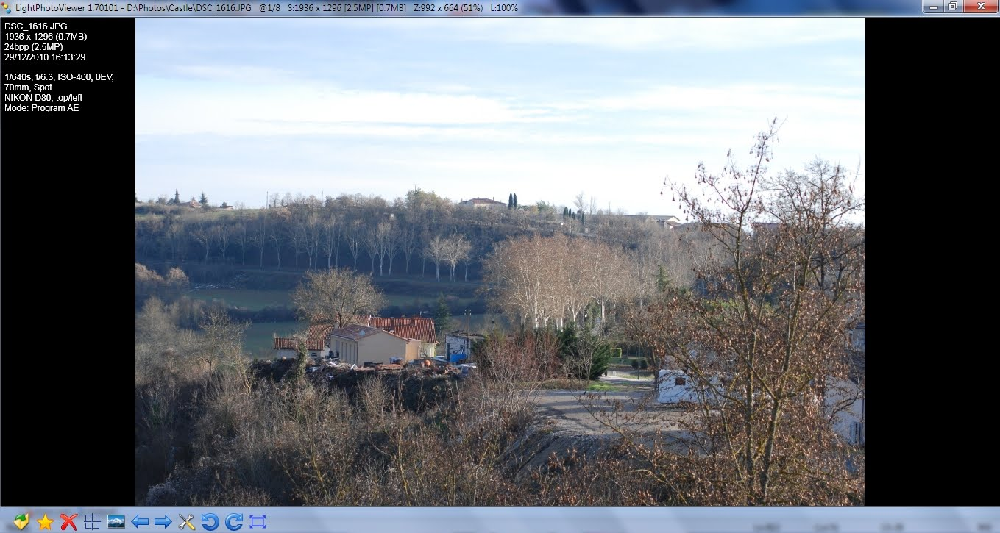
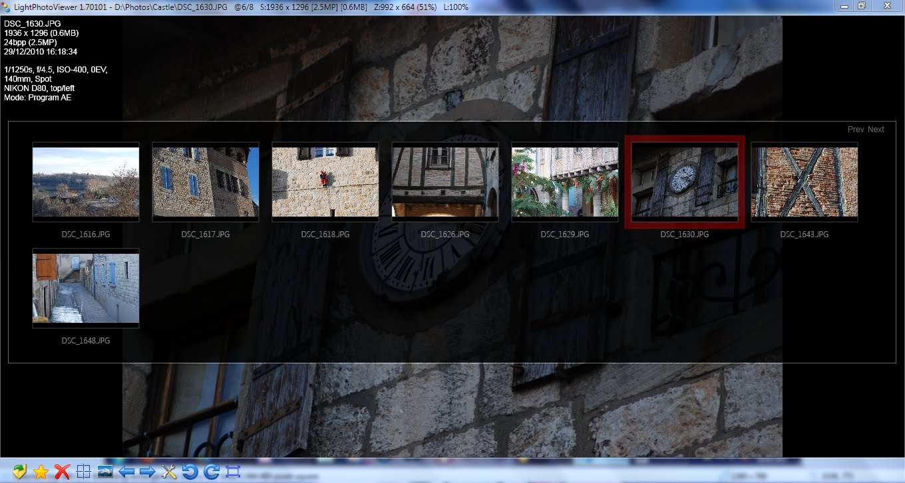

Light Photo Viewer est une application légère et rapide pour visualiser des photos de votre ordinateur.
Fonctionnalités :
- Charger et visualiser la photo instantanément
- Zoomer la photo à un point spécifique
- Pivoter la photo
- Supporter les formats BMP, GIF, ICO, JPEG, PNG, TIFF, WDP, HDP
- Afficher les métadonnées Exif de la photo
- Pivoter la photo automatiquement en utilisant les métadonnées Exif si elles existent
- Redimensionner la photo
- Mode diaporama avec des photos


Téléchargement
L'application est gratuite Light Photo Viewer v1.70401 (04 Janvier 2011, version anglaise, 2,64 MB).
Système minimum requis
- Windows 7, 8, 10 (recommandés), Windows Vista SP2
- DirectX. Si un message d'erreur s'affiche comme "d2d1.dll and dwrite.dll not found", il faut installer un des paquets suivants :
Pour visualiser les RAWs, il faut installer les codecs suivants :